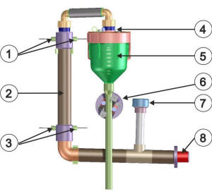
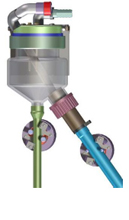
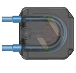

Dosing Systems
Vacuum system
Probably the most common system in Europe, The sample is extracted by means of a vacuum, that means the liquid is sucked up through the sample hose and led into a metering vessel in which the sample volume is adjusted.
Main functions and advantages:
- Very reliable
- Well--proven system since thousand systems in use
- With purge cycle
- Gentle samle extraction
- Almost no wear
- Low operation expenses
Vacuum System - Variable -
Vacuum system with automatic volume adjustment Like the standard Vacuum system, however, with automatic adjustment of the sample volume. This system is of interest if samples shall be taken flow- proportional with a fixed interval. With this system it is possible to monitor changes in water quality even at low flow rates as in standard flow- proportional sampling the sampling intervals are very long.
Main functions and advantages:
- Electrodes 2
- Measuring tube
- Electrodes 1
- Connection for aeration
- Dosingvessel
- Cleaning cap of gas drap
- Inlet connection
Flow-through System
the fixed quantity water switch was developed further so that the disadvantage of inaccurate sampling at a variable inflow is eliminated. (range = 3 - 20 l/min)
Main functions and advantages:
- suitable for variable inflow
- also applicable with pressurised lines
- high dosing accuracy
- low maintenance
- Dosingvessel
- only applicable at free inflow
- limited flow (max. 3-20 l/min.)



